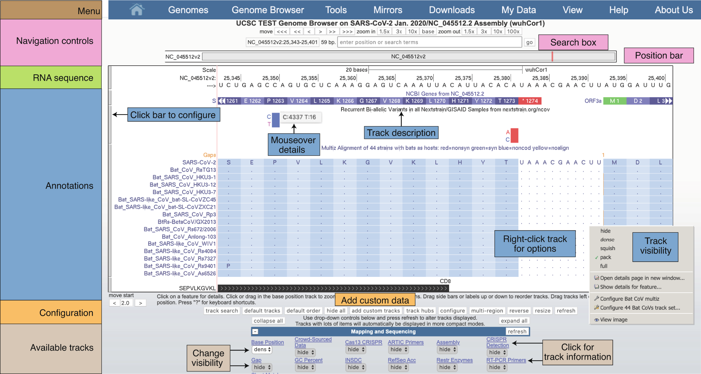

The UCSC Genome Browser is an open-source, interactive sequence visualization tool that has been a cornerstone of genomics since we released the first human genome assembly 20 years ago; cited in more than 37,000 scientific articles. It allows for cross referencing of research, clinical, and epidemiology data against the SARS-CoV-2 reference genome.
This guide will go through some of the most important use cases of the SARS-CoV-2 Genome Browser. For those who prefer a video explanation, we also the following:
With more than 80 total datasets across the SARS-CoV-2 reference genome's nearly 30,000 RNA bases, navigation is essential to finding the information you want to see. Below is an example view of the Genome Browser with labeled sections highlighting the navigation, reference sequence, annotations, and additional available track datasets below.

This is a view of the SARS-CoV-2 Genome Browser with labeled elements to help with orientation.